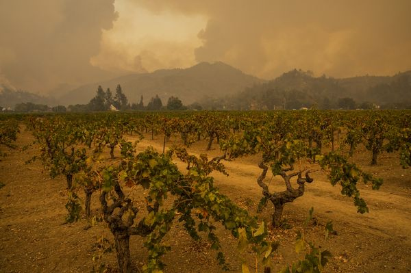
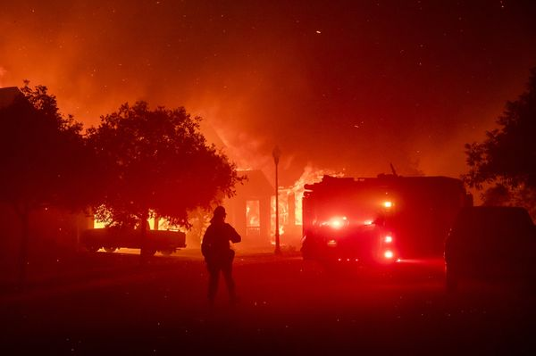

Wildfires in California have burned a record 4 million acres since the start of 2020, charring more land in the past nine months than during the previous three years combined.
The results are devastating. The more than 8,200 blazes since January have killed 31 people and destroyed more than 8,400 homes and buildings, the California Department of Forestry & Fire Protection said Sunday . The number of acres burned is more than double the previous record, set in 2018.
The fires have been stoked by searing-hot weather, tinder-dry brush left after years of drought, powerful winds and other conditions that state officials say have been made worse by climate change. In August, a record-breaking heat wave triggered the state’s first rotating power outages since the 2001 energy crisis. Smoke from the blazes has drifted as far as Europe.
This weekend, firefighters face another round of heat as they battle an inferno in Northern California’s wine country. The Glass Fire has charred more than 63,000 acres and destroyed at least 800 homes and buildings. Temperatures in the city of Napa were forecast to hit 90 Fahrenheit on Sunday.
Four people have now been killed in a separate blaze, the Zogg Fire, burning further north in Shasta County, authorities said Thursday. It’s charred more than 56,000 acres.
Smoke rises behind Sterling Vineyards during the Glass Fire in Napa County, on Sept. 28. Photographer: Philip Pacheco/Bloomberg
In addition to devastating huge swaths of land, the blazes have fouled the state’s air. Thick bands of smoke have been drifting over cities for weeks, darkening the sun and forcing people to stay indoors to avoid breathing unhealthy air.
California’s peak wildfire season traditionally runs from September through November. It has grown longer and less predictable in recent years, with blazes coming as late as December. Five of the six largest fires in California’s history have occurred this year, including the August Complex in Tehama County, which is the biggest ever.
The Glass Fire began as strong, dry winds raked the hills above Napa Valley, near the town of Calistoga, whose residents were ordered to evacuate. But in recent days, calmer and cooler weather helped slow the fire’s growth. By Friday night, firefighters had contained 8% of the blaze.
Firefighters defend the Skyhawk Park neighborhood of East Santa Rosa on Sept. 27. Photographer: Philip Pacheco/Bloomberg
The blaze is raging northeast of Santa Rosa, an area devastated by the 2017 Tubbs Fire that was among the most destructive in California history. Properties damaged in the famed vineyard region included the Chateau Boswell estate, the Meadowood resort and the Castello di Amorosa winery.